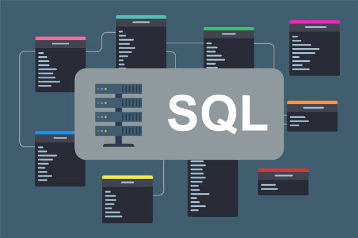

In this project i take a look at Olympics dataset dating back to athens Greece to Rio olympcs 2016.
In the analysis I seek to answer questions about countries participation in olympics, medal share of the
participating countries to questions about women participation.
The dataset contains information about movies produced from 1980 to 2020. In the project i take a look at the budget and the profitablity of movies across different genres.
This dataset contains information about Electronic products sold at Amazon. In the project i seek to answer questions about products performance in terms of their sales.
In this project I take a look at the field of data science. I answer questions about the average salary of a data scientist and their employment types. The data cleaning,analysis and visualization is done using Python and its visualization libraries.
This project covers the analysis of covid data since its onset on 2019 to its peak in 2020. I examine various aspects of the pandemic from confirmed cases, deaths, recoveries to vaccination. In the project i also get to employ advanced python coding by abstracting and automating some of the processes like data download
SpaceX is an American based space agency. Its ambitious space projects are outstanding and in this project i take a look at the data concerning the launch of their rockets Falcon9 and Falcon Heavy.
In this project I use SQL to expolre information about a world layoffs database. My approach to exploratory data analysis is somewhat crude but effective i begin with data cleaning and some feature engineering then the actual data exploration.

In this project I use SQL to come up with a summary of a bank loan report. The dataset used contains information from a banking institution pertaining their lending activities .
The project explores walmart's sale dataset using SQL. I answer a variety of questions ranging from the performance of different product lines, customer information to sales performance over time.
The link showcases tableau workbooks with visualizations from a variety of projects in my portfolio